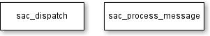
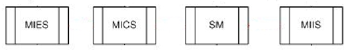
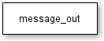
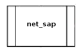
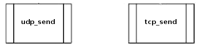

The classes udp_listener and tcp_listener are wrappers around the boost::asio::ip::udp and boost::asio::ip::tcp and are responsible for handling UDP and TCP communications, respectively.
The MIHF receives messages from two different sources, other MIHFs and local SAPs. If a message is from another MIHF, the message must be processed by the transaction state machines, as defined in the standard. If it is from a local SAP the transaction state machines are bypassed to reduce the number of messages exchanged locally.
A dispatch method is supplied when a listening service is instantiated and is called when a valid message is received.
If the listening service is responsible for remote communications, a reference to a message_in instance should be passed on the constructor. If it is responsible for local communications, a reference to the sac_dispatch method should be supplied.

The message_in checks the transaction_pool for a pending transaction for the incoming message, or if a new source transaction must be created and then added to the transaction pool.
Then proceeds to run the newly created, or found, transaction.

The service access controller is split in sac_dispatch and sac_process_message, because the transaction state machines, defined in the standard, expect a global function that processes the incoming message and returns a boolean indicating that a response message was generated. This complicates matters because we don't want to run the local messages through the transaction state machines.
The sac_dispatch is called by the local communications listening service and checks if the message id is supported. If so, the message is processed by a previously declared handler.
The sac_process_message is a global function called by the transaction state machines that checks if the message id is supported by the MIHF, but doesn't try to send the message directly, it just returns to the transaction state machine that called it. Registering a callback handler for a MIH message is done with the sac_register_callback function.

These refer to the Event Service, Command Service, Service Management and Information Service that are responsible for handling the different kind of messages.
A local transaction pool is supplied to handle pending transactions from local SAPs. A user might request to send a message to a peer MIHF, and in order to forward it the response some state must be stored.

This class is used by the MIHFs services and checks if the MIH destination identifier of the message is in the local address book. If it is, the message is for a local SAP and the udp_send method is called to send the message. If it's not in the local address book the message is forwarded to the message_out.

Checks, in the transaction pool, if the outgoing message belongs to a pending transaction, if so the transaction is run and eventually the message is sent.

This class, when called, checks if the MIH destination identifier is in the remote address book, if so the message is sent using on of udp_send or tcp_send.

These are functions that send a message using the specified protocol.
The classes udp_send and tcp_send are responsible for handling UDP and TCP communications, respectively.
A meta_message is a derived class from odtone::mih::message with added metadata.
The metadata indicates if the message was received on the loopback interface and also the IP address and port of the sender of the message. It's useful mostly due to broadcast messages.
This class is used to store information on how to communicate with other entities. An address book (local_abook) is instantiated to store information on local SAPs. Another (remote_abook) is instantiated to store information of peer MIHFs.